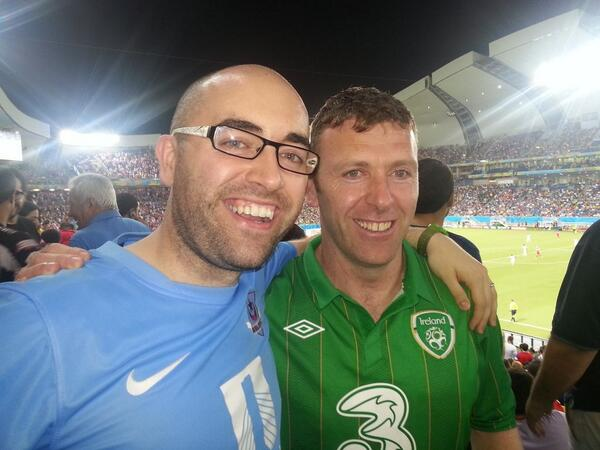
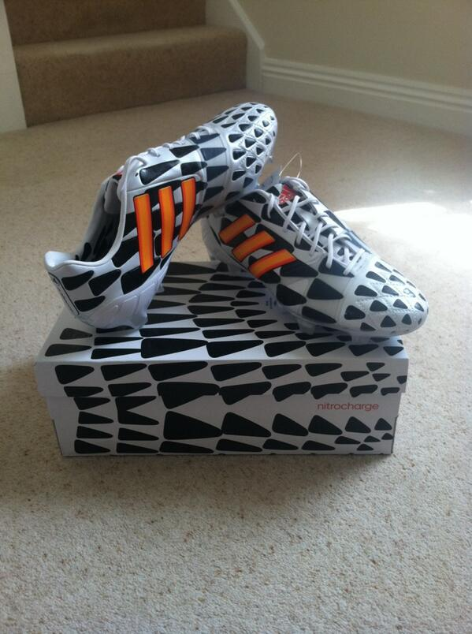
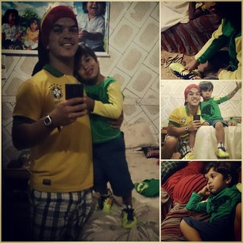
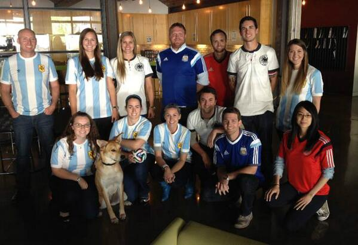
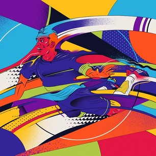
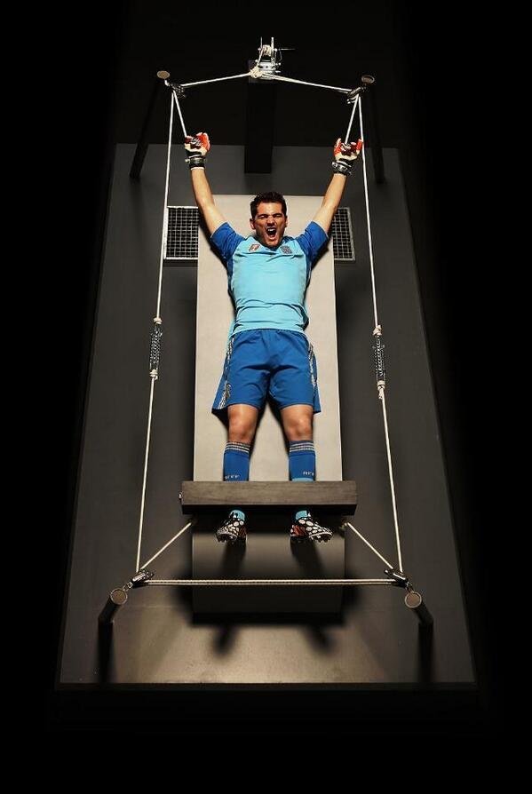
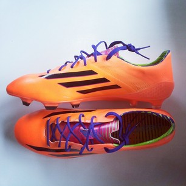

#JoinIn with…
#JoinIn The Conversation
Tweet
or
Post

13m
Joe Dimitri Damian
@
JoeTheTank20
If this doesn't get you all hot and bothered I don't know what will
#USA
#WorldCup
#HotAndBothered
http://
espn.go.com/video/clip?id=
11100148
…
Reply
Retweet
Favorite
9m
Brian Perkins
@
brianperkinstx
If Portugal is without 4 of their starters, including Ronaldo, I like
#USA
chances
#WorldCup
Austin, TX
Reply
Retweet
Favorite
11m
Page Not Found
@
BlogPageNFound
Repórter 'surta' durante EUA x Gana e se junta a torcedores.
http://
glo.bo/1qsI9jT
#Copa2014
Reply
Retweet
Favorite
11m
Hatem Nassrat
@
pykler
Twitter adds flags to
#WorldCup
hashtags
#ARG
#CIV
#GHA
#CMR
#ALG
#NED
#POR
#BRA
#SPA
#JPN
#ITA
#ENG
#FRA
#USA
#BEL
#BIH
Reply
Retweet
Favorite
19m
Wiin Ner
@
WiinNer2
Second half not far away now. and i think
#NED
will get back strongly!
#allin
http://
bst.tc/allin
Reply
Retweet
Favorite
15m
April Hunt
@
AprilHunt80
Any addition is really a subtraction. The gospel, in it's purest form, is as good as it gets.
#allin
#summersmallgroups
#celebrationchurch
Reply
Retweet
Favorite
Top Trending
48
Clint
DEMPSEY
70
John
BROOKS
106
Michael
BRADLEY
134
Jozy
ALTIDORE
136
Timmy
CHANDLER
154
Tim
HOWARD



26m
ItsMariah
@
Mariahachem13
and this is it, the end of the first half... 1-1 between netherlands and australia
#allin
http://
bst.tc/allin
Reply
Retweet
Favorite
5m
ItsMariah
@
Mariahachem13
Big game by both of the two team...
#allin
http://
bst.tc/allin
Reply
Retweet
Favorite

8m
Wiin Ner
@
WiinNer2
this is the kinf of the match i enjoy to watch!!
#allin
http://
bst.tc/allin
Reply
Retweet
Favorite
5m
Wiin Ner
@
WiinNer2
motivated players from both sides equal chances and lot's of gaol!!!
#allin
http://
bst.tc/allin
Reply
Retweet
Favorite

